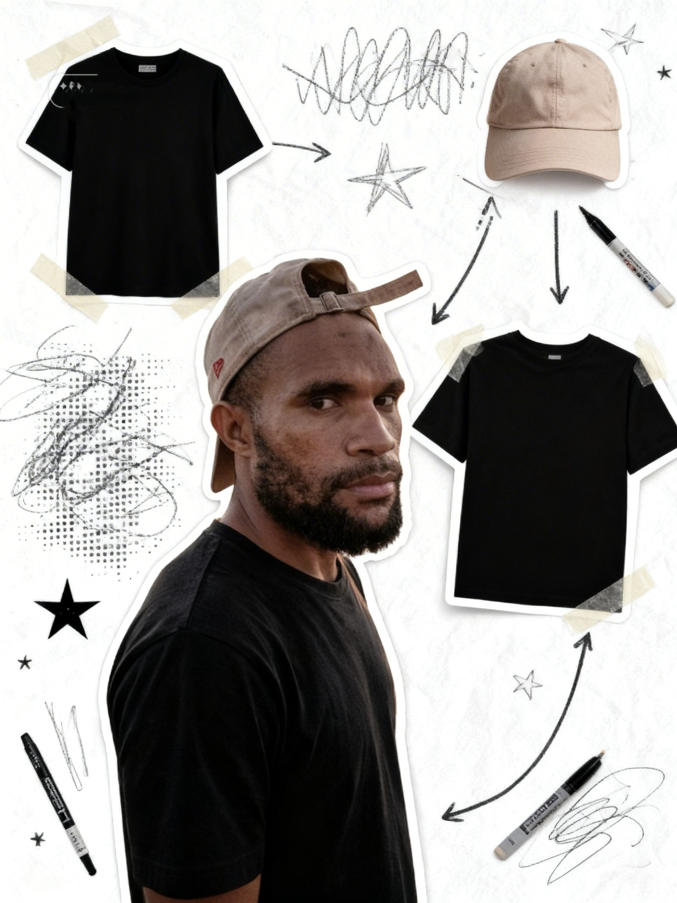

Konten Kreator • Freelancer • Digital Creator
Saya adalah konten kreator dari Jayapura yang fokus pada pembuatan konten inspiratif, membangun komunitas kreator, dan mengembangkan personal branding di media sosial.